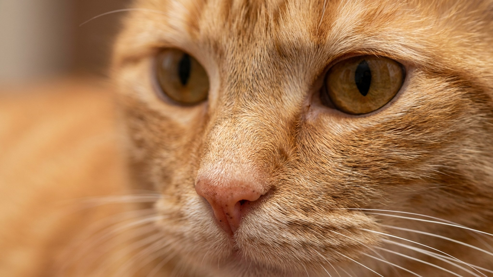

Двадцать минут вокруг дома — и гордон-сеттер возвращается с таким видом, будто прогулку отменили. Это самый крупный и мощный из сеттеров, выведенный носиться по шотландским болотам весь день, и городской моцион его не выключает. Ниже — сколько движения ему реально нужно, каким он растёт в характере и кому такая собака в радость, а не в тягость.
🐾 Ваш питомец — гордон-сеттер?
Заведите профиль в AnimaLife: приложение запомнит породу, возраст и вес и будет подсказывать по уходу именно для неё. Вопросы AI-ветеринару — круглосуточно и бесплатно.
Завести профиль → Завести в MAX →
У вас iPhone? AnimaLife есть в App Store
Гордон-сеттер (он же шотландский сеттер) выведен в Шотландии как подружейная собака для работы по птице. Из трёх сеттеров — английского, ирландского и гордона — этот самый крупный и костистый: кобели вырастают до 66 см и 25–36 кг. Отличает его глубокий чёрный окрас с чёткими рыжими (подпалыми) отметинами над глазами, на морде, груди и лапах — ни с кем не спутать. Шерсть длинная, шелковистая, с богатыми очёсами на ушах, животе и хвосте.
Гордон — рабочая собака до кончика хвоста: выносливая, умная и азартная. Он мягче и вдумчивее ирландского сеттера, сильно привязывается к своей семье и плохо переносит одиночество. К своим — ласков и предан, с чужими сначала сдержан.
Шелковистая шерсть не сваливается так, как у болонок, но очёсы легко собирают колтуны и репьи. Расчёсывать 2–3 раза в неделю, после прогулок по полям и лесу — осматривать лапы и «штаны». Висячие уши с длинной шерстью хуже проветриваются, поэтому их состояние проверяют регулярно: заглянуть, понюхать, при неприятном запахе или частом потряхивании головой — показать ветеринару. Купание — по мере загрязнения, обычно раз в 1–2 месяца.
🐾 У вас гордон-сеттер?
AnimaLife соберёт уход под породу: к каким болезням есть склонность, что проверять по возрасту, чем кормить и когда пора к врачу. Бесплатно, прямо в мессенджере.
Собрать план ухода → Собрать в MAX →
У вас iPhone? AnimaLife есть в App Store
🐾 Понравился разбор?
Подпишитесь на канал — каждый день разбираем по одному тревожному симптому у кошек и собак: что в пределах нормы, а когда пора к врачу. Подпишитесь, чтобы не пропустить разбор, который может спасти здоровье вашего питомца.
Гордон-сеттер — собака для активных людей, которые любят долгие прогулки, пробежки, велосипед и готовы вкладываться в дрессировку. Он отлично впишется в семью, где кто-то много бывает дома, и раскроется у охотника или любителя собачьего спорта. И совсем не подойдёт тем, кто занят весь день и мечтает о спокойном «диванном» псе: недовыгулянный и заскучавший гордон становится нервным и разрушительным. Дайте ему дело — и получите умного, преданного и красивого напарника на 10–12 лет.